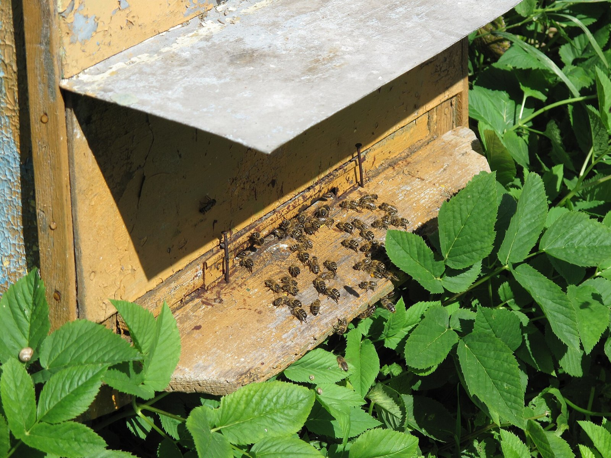
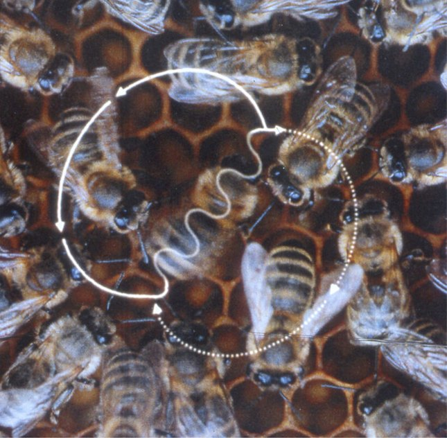
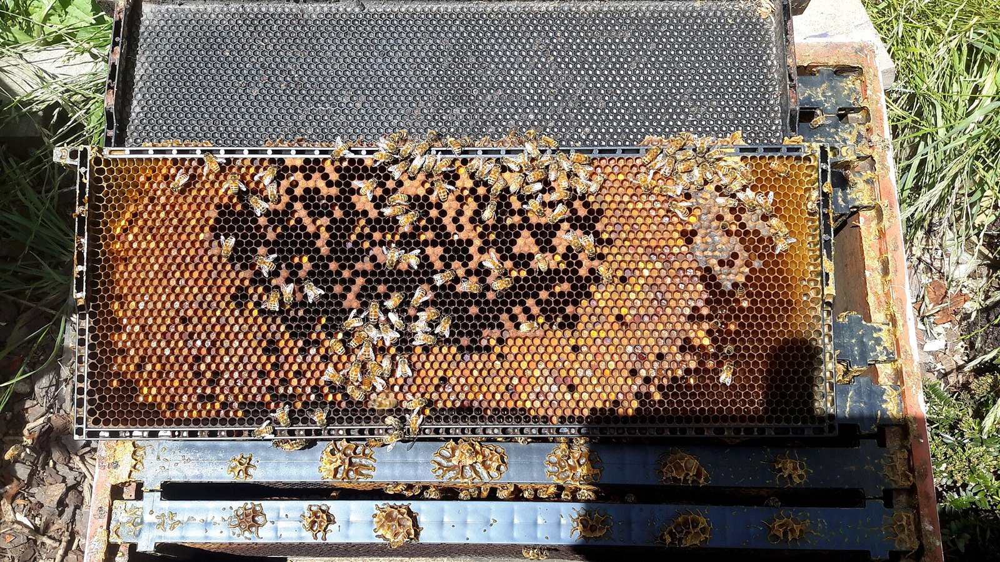
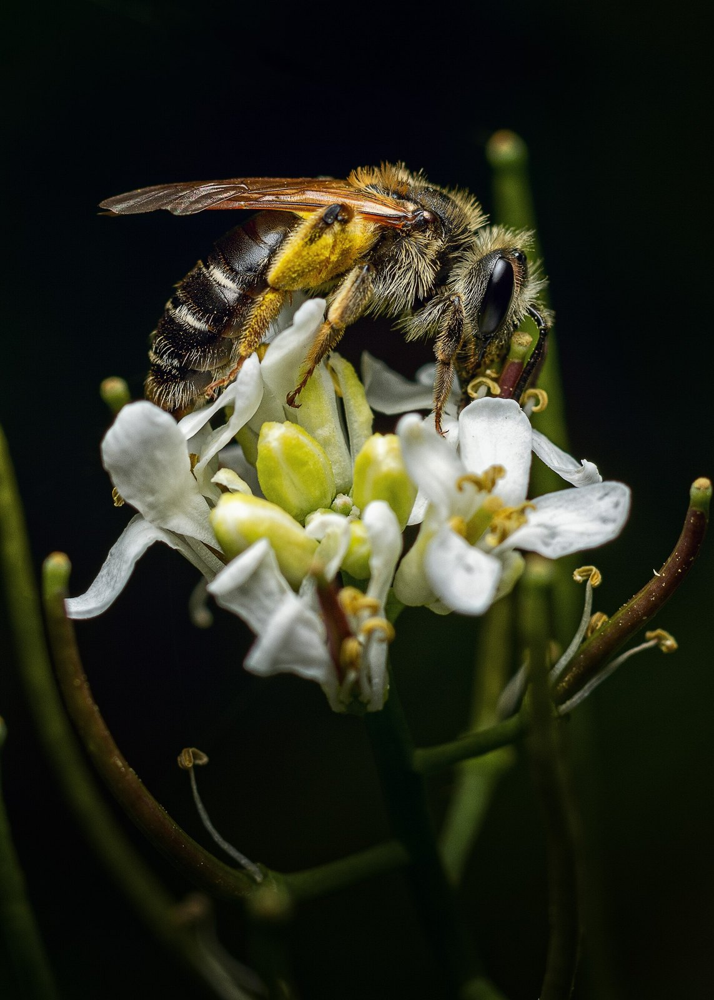
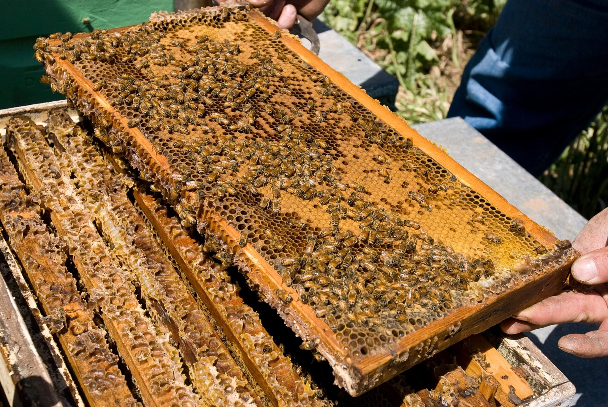
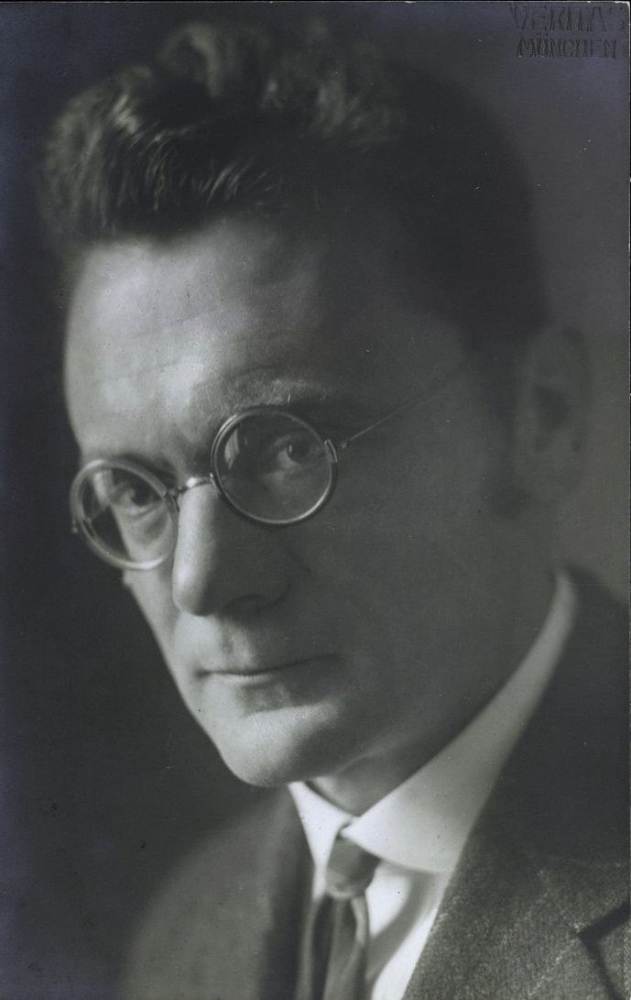
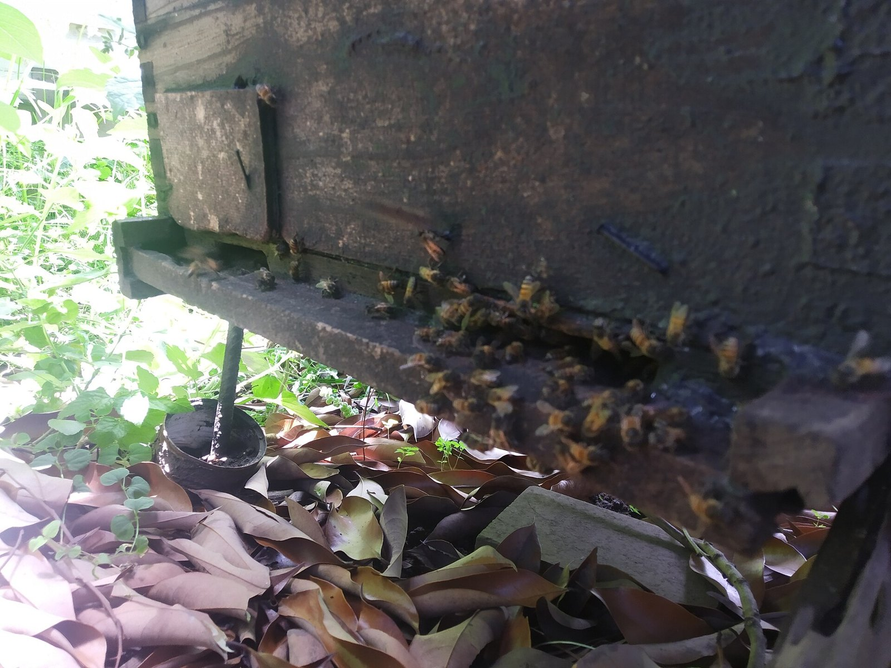

CURIOSIDADES DE LA VIDA•EP. 03
¿SABÍAS QUE LAS ABEJASBAILAN
PARA DECIRSEDÓNDE HAY COMIDA?
CUANDO UNA ABEJAENCUENTRA FLORES,
VUELVE A LA COLMENAY BAILA
DIBUJANDOUN OCHO.
EN EL CENTRO DEL OCHOCAMINA EN LÍNEA RECTA
MIENTRAS MUEVEEL ABDOMEN
A TODAVELOCIDAD.
EL ÁNGULODE ESA LÍNEA
INDICA LA DIRECCIÓNRESPECTO AL SOL.
SI BAILAHACIA ARRIBA,
LAS FLORES ESTÁNEN LA DIRECCIÓN DEL SOL.
SI BAILA HACIA ABAJO,EN LA CONTRARIA.
Y LO HACENA OSCURAS:
LAS DEMÁS ABEJASSIGUEN EL BAILE
TOCÁNDOLACON LAS ANTENAS.
Y HAY ALGO TODAVÍAMÁS SORPRENDENTE.
CUANTO MÁS TIEMPOMUEVE EL ABDOMEN,
MÁS LEJOSESTÁN LAS FLORES.
ES COMO UN MAPAHECHO CON EL CUERPO.
ESTE LENGUAJELO DESCUBRIÓ
EL CIENTÍFICOKARL VON FRISCH,
Y GANÓEL PREMIO NOBEL POR ELLO.
GRACIAS A ESTE BAILE,UNA COLMENA
PUEDE ENCONTRAR FLORESA VARIOS KILÓMETROS
DE DISTANCIA.
¿CONOCÍASESTE SECRETO?